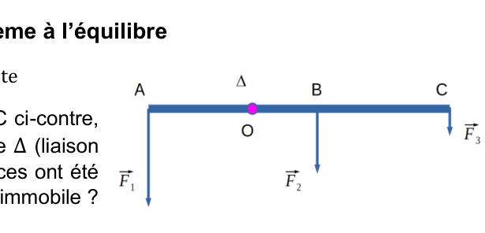
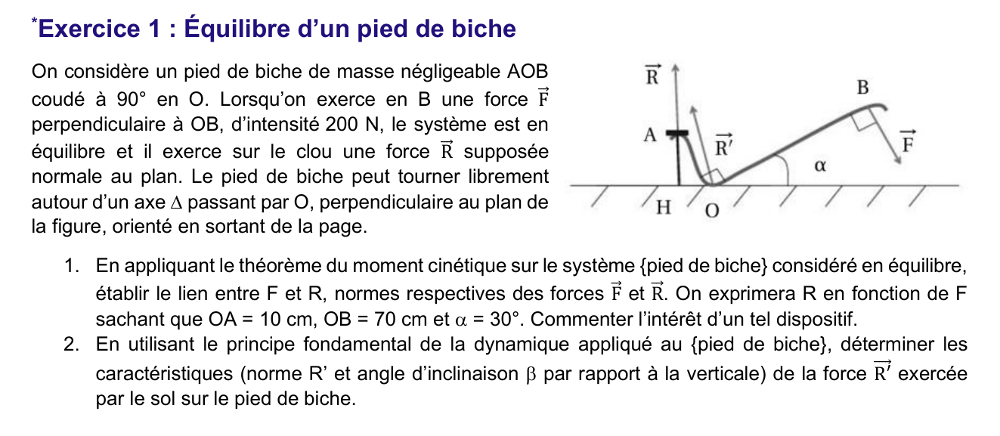
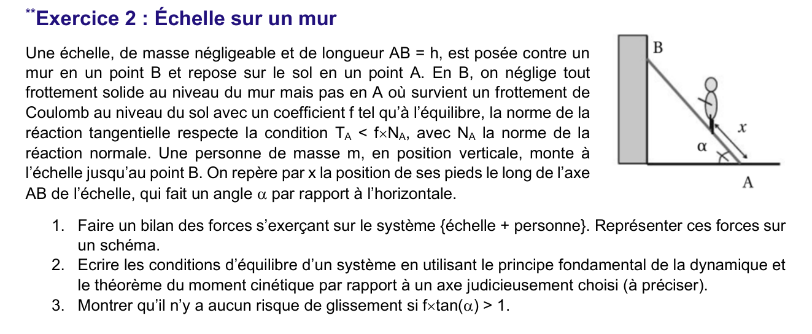
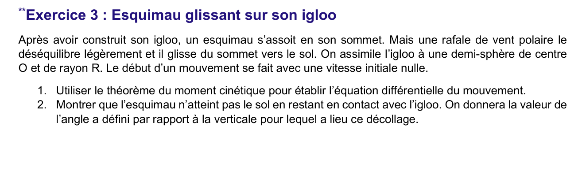
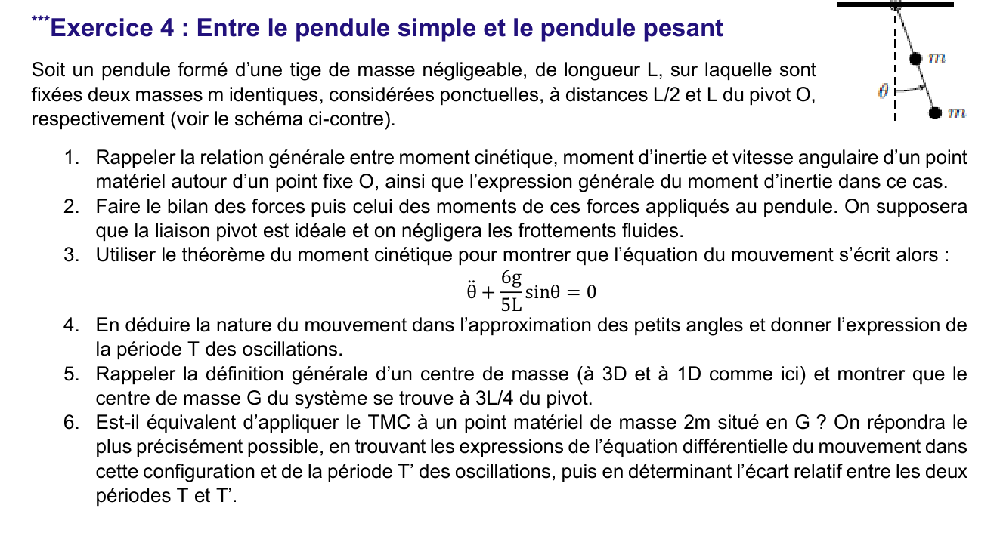
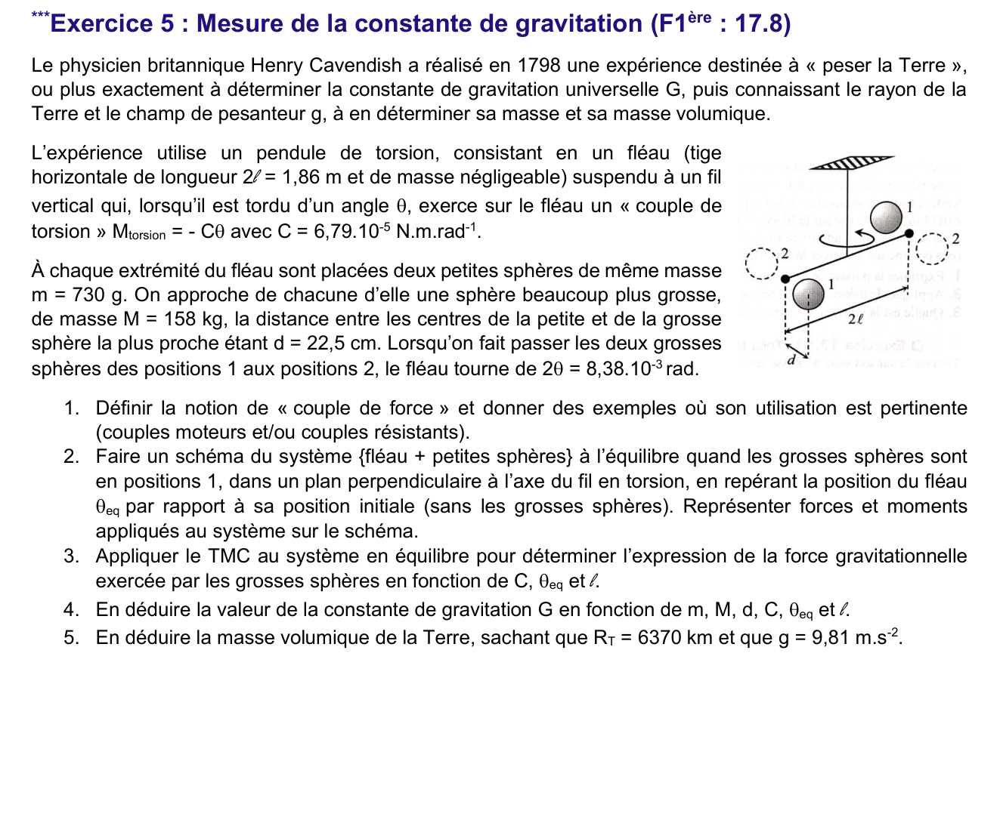

Ch7 — Moment cinétique : moment d'inertie, moment d'une force, théorème du moment cinétique
Pour un point matériel en rotation autour d'un axe fixe, le moment cinétique \(L_\Delta\) est proportionnel à la vitesse angulaire, avec le moment d'inertie \(J_\Delta=mr^2\) comme coefficient. Le théorème du moment cinétique (TMC) relie sa variation à la somme des moments des forces : c'est la version « rotation » du principe fondamental de la dynamique. Ce chapitre donne les définitions, le TMC appliqué à un pendule, et l'équilibre d'un solide (pied de biche, échelle, igloo, pendule à deux masses, expérience de Cavendish). AM2 · P2030 · Semestre 3 — D. Courtois, cours daté du 03/11/2026.
1. Résumé de cours
1.1 Moment cinétique d'un point par rapport à un point fixe
- Sa valeur \(L_O=OM\cdot mv\cdot\sin\alpha\) s'exprime en kg·m²·s⁻¹.
- Sa direction est celle de l'axe instantané de rotation de \(M\) autour de \(O\) (règle de la main droite). Il est perpendiculaire au plan du mouvement passant par \(O\).
- Changement de point fixe : \(\vec L_{O'}(M)=\overrightarrow{O'O}\wedge\vec p(M)+\vec L_O(M)\).
1.2 Moment cinétique scalaire par rapport à un axe orienté
C'est la projection du moment cinétique vectoriel sur l'axe \(\Delta\). Si \(\vec L_O\) est colinéaire à l'axe, \(L_\Delta\) est simplement sa norme.
1.3 Rotation autour d'un axe fixe
Pour \(\vec u_\Delta=\vec e_z\) fixe :
\[ L_\Delta(M)=J_\Delta(M)\,\omega \qquad J_\Delta(M)=m\,r^2 \qquad \omega=\dot\theta \]\(J_\Delta\) mesure l'inertie à la mise en rotation : plus la masse est loin de l'axe, plus elle est difficile à faire tourner.
1.4 Moment d'une force
\[ \vec{\mathcal M}_O(\vec F)=\overrightarrow{OM}\wedge\vec F \qquad \mathcal M_O(\vec F)=d\,F \]\(d=OH\) est le bras de levier : distance la plus courte entre \(O\) et la droite d'action de \(\vec F\). Unité : N·m.
La composante de \(\vec{\mathcal M}_O\) perpendiculaire à l'axe ne fait pas tourner le système : elle est équilibrée par la réaction de l'axe.
1.5 Théorème du moment cinétique
Le TMC est le PFD écrit en rotation : on prend \(\overrightarrow{OM}\wedge\) du PFD (voir Q6). À l'équilibre, \(\sum\mathcal M_\Delta(\vec F_i)=0\), soit \(L_\Delta\) constant.
2. Applications du cours (Q1 à Q8)
Chaque question du polycopié est reprise. Les questions Q1 à Q7 se traitent sans figure. Q8 demande une lecture à l'échelle de la figure, expliquée à la fin.
1) Produit vectoriel en base orthonormée directe
Étape 1 : formule
Étape 2 : position et vitesse dans la base cylindrique
Le mouvement est plan, perpendiculaire à \(\vec e_z\) : \(z_M\) est constant. Donc :
\[ \overrightarrow{OM}=r\,\vec e_r \qquad \vec v=\dot r\,\vec e_r+r\dot\theta\,\vec e_\theta \]Étape 3 : produit vectoriel
\[ \overrightarrow{OM}\wedge m\vec v=m\,r\,\vec e_r\wedge\left(\dot r\,\vec e_r+r\dot\theta\,\vec e_\theta\right)=m\,r^2\dot\theta\;\vec e_r\wedge\vec e_\theta \]Dans la base cylindrique directe, \(\vec e_r\wedge\vec e_\theta=\vec e_z\). Donc :
Démonstration
Étape 1 : deux points \(O\) et \(O'\) sur \(\Delta\)
\(\overrightarrow{OM}=\overrightarrow{OO'}+\overrightarrow{O'M}\) donc :
\[ \vec L_O(M)=\overrightarrow{OO'}\wedge\vec p+\vec L_{O'}(M) \]Étape 2 : projection sur l'axe
\(\overrightarrow{OO'}\) est dirigé selon \(\Delta\), donc \(\overrightarrow{OO'}\wedge\vec p\) est perpendiculaire à \(\overrightarrow{OO'}\), donc à \(\vec u_\Delta\). Son produit scalaire avec \(\vec u_\Delta\) est nul :
\[ L_\Delta(M)=\left(\overrightarrow{OO'}\wedge\vec p\right)\cdot\vec u_\Delta+L_{O'\Delta}(M)=L_{O'\Delta}(M) \]Réponse
- On oriente \(\Delta\) par \(\vec u_\Delta\). Si \(M\) tourne dans le sens direct (règle de la main droite autour de \(\vec u_\Delta\)), \(\dot\theta>0\) et \(L_\Delta>0\).
- Si \(M\) tourne dans le sens contraire, \(L_\Delta<0\).
1) Moment en \(O'\)
\[ \vec{\mathcal M}_{O'}(\vec F)=\overrightarrow{O'M}\wedge\vec F=\left(\overrightarrow{O'O}+\overrightarrow{OM}\right)\wedge\vec F=\overrightarrow{O'O}\wedge\vec F+\vec{\mathcal M}_O(\vec F) \]2) Projection sur \(\Delta\)
Étape 1 : terme parasite
\(\overrightarrow{O'O}\) est selon \(\Delta\), donc \(\overrightarrow{O'O}\wedge\vec F\) est perpendiculaire à \(\vec u_\Delta\) : son produit scalaire avec \(\vec u_\Delta\) est nul.
Étape 2 : conclusion
Paramètres et directions
- Le moment est \(\mathcal M_\Delta=d\,F\). Pour un moment donné, la force la plus faible est celle qui a le plus grand bras de levier \(d\) : on pousse ou tire le plus loin possible de la charnière, à la poignée et non près de l'axe.
- La force doit être perpendiculaire au plan de la porte (la direction qui donne le bras de levier maximal). Une force parallèle à l'axe (charnière) n'a aucun effet.
- Une force dont la droite d'action coupe l'axe n'a aucun effet, quelle que soit son intensité : \(d=0\).
Démonstration
Étape 1 : dérivée du moment cinétique
\[ \frac{d\vec L_O}{dt}=\frac{d}{dt}\left(\overrightarrow{OM}\wedge m\vec v\right)=\underbrace{\vec v\wedge m\vec v}_{=\,\vec 0}+\overrightarrow{OM}\wedge m\vec a \]Étape 2 : PFD
Le PFD donne \(m\vec a=\sum\vec F_i\). Donc :
\[ \frac{d\vec L_O}{dt}=\overrightarrow{OM}\wedge\sum\vec F_i=\sum\vec{\mathcal M}_O(\vec F_i) \]1) Valeur de \(dL_\Delta/dt\) à \(\theta=30^\circ\)
Étape 1 : moment du poids
Le fil est sans masse, la réaction passe par le pivot \(O\) : son moment est nul. Seul le poids \(m\vec g\) a un moment sur l'axe. Son bras de levier vaut \(L\sin\theta\) :
\[ \mathcal M_\Delta(m\vec g)=-m\,g\,L\sin\theta \]Étape 2 : signe
Le poids ramène le pendule vers la verticale : le moment est négatif pour \(\theta>0\).
Étape 3 : application numérique
\[ \frac{dL_\Delta}{dt}=-0{,}050\times9{,}81\times0{,}40\times\sin 30^\circ=-0{,}0981\ \text{N·m} \]2) Équation différentielle
Étape 1 : \(L_\Delta=J_\Delta\dot\theta\)
Pour un point à distance \(L\) de l'axe, \(J_\Delta=mL^2\). Donc \(L_\Delta=mL^2\dot\theta\) et \(\dfrac{dL_\Delta}{dt}=mL^2\ddot\theta\).
Étape 2 : TMC
\[ mL^2\ddot\theta=-mgL\sin\theta \quad\Longrightarrow\quad \ddot\theta+\frac gL\sin\theta=0 \]Étape 3 : petits angles
C'est l'équation d'un oscillateur harmonique : le mouvement est sinusoïdal, non amorti, de pulsation propre \(\omega_0\).

Méthode
Étape 1 : moments sur \(\Delta\)
Chaque force verticale a un moment sur l'axe horizontal \(\Delta\) égal à son intensité multipliée par sa distance horizontale à \(O\), avec un signe selon le côté (A et B, C de part et d'autre de \(O\)). La barre est en équilibre (sans rotation) si :
\[ \sum_i\mathcal M_\Delta(\vec F_i)=0 \]Étape 2 : lecture de la figure
La figure est tracée « à l'échelle » mais ne donne aucune valeur numérique. La réponse se lit donc en mesurant sur la figure les bras de levier \(OA\), \(OB\), \(OC\) et les longueurs des flèches \(F_1\), \(F_2\), \(F_3\).
3. Correction du TD7 (Ex 1 à 5)
Le TD7 fourni n'a pas de corrigé officiel : les corrections sont rédigées par nous et signalées comme telles. Les résultats numériques ont été recalculés (Python). Les hypothèses prises sont écrites dans chaque exercice.

Données : \(F=200\) N, \(OA=10\) cm, \(OB=70\) cm, \(\alpha=30^\circ\). Le pied de biche tourne autour d'un axe \(\Delta\) passant par \(O\). Masse négligeable.
1) Lien entre \(F\) et \(R\) (théorème du moment cinétique)
Étape 1 : choix de l'axe et bilan des moments
On applique le TMC en équilibre, autour de \(\Delta\). La réaction \(\vec R'\) du sol passe par \(O\) : son moment est nul. Restent \(\vec F\) en \(B\) et l'action du clou en \(A\), verticale d'après la figure.
\[ \mathcal M_\Delta(\vec F)+\mathcal M_\Delta(\vec R_{\text{clou}})=0 \]Étape 2 : moment de \(\vec F\)
\(\vec F\) est perpendiculaire à \(OB\) : son bras de levier est \(OB\).
\[ |\mathcal M_\Delta(\vec F)|=OB\cdot F=0{,}70\times200=140\ \text{N·m} \]Étape 3 : moment de \(\vec R\)
Étape 4 : équilibre des moments
\[ OB\cdot F=d_R\cdot R \quad\Longrightarrow\quad R=\frac{OB}{OA\sin\alpha}\,F=14\,F \]2) Réaction du sol \(\vec R'\) (PFD)
Étape 1 : composantes des forces sur le pied de biche
Le sens de \(\vec F\) est perpendiculaire à \(OB\), vers le bas et vers la droite : \(\vec F=F(\sin\alpha\,;\,-\cos\alpha)\) dans le repère (horizontal, vertical). L'action du clou est verticale vers le bas :
\[ \vec F=\left(100\,;\,-173{,}2\right)\ \text{N} \qquad \vec R_{\text{clou}}=(0\,;\,-2800)\ \text{N} \]Étape 2 : PFD (masse négligeable)
La somme des forces est nulle :
\[ \vec F+\vec R_{\text{clou}}+\vec R'=\vec 0 \quad\Longrightarrow\quad \vec R'=-\left(\vec F+\vec R_{\text{clou}}\right)=\left(-100\,;\,2973{,}2\right)\ \text{N} \]Étape 3 : norme et inclinaison
\[ R'=\sqrt{100^2+2973{,}2^2}\approx2{,}97\cdot10^{3}\ \text{N} \qquad \tan\beta=\frac{-100}{2973{,}2}\Rightarrow\beta\approx-1{,}9^\circ \]
1) Bilan des forces sur {échelle + personne}
Étape 1 : repère
On prend \(A\) à l'origine, l'axe \(x\) horizontal dirigé à l'opposé du mur (vers la droite de la figure), l'axe \(y\) vertical vers le haut. Le mur est donc à gauche, et \(\vec u=\overrightarrow{AB}/h=(-\cos\alpha\,;\,\sin\alpha)\).
Étape 2 : forces
- Poids de la personne \(m\vec g\), appliqué au point \(P\) à la distance \(x\) de \(A\) : \(\overrightarrow{AP}=x\vec u\).
- En \(B\) : réaction du mur, horizontale, sans frottement \(\vec N_B=N_B\,\vec e_x\) (poussée du mur vers l'extérieur, c'est-à-dire vers \(+x\)).
- En \(A\) : réaction du sol \(\vec R_A=T_A\,\vec e_x'+N_A\vec e_y\) avec frottement de Coulomb, \(T_A\) dirigé pour s'opposer au glissement.
Le poids et \(\vec N_B\) sont les deux forces « verticale » et « horizontale » qui agissent sur l'échelle.
2) Conditions d'équilibre
Étape 1 : PFD (translation)
Projection horizontale : \(T_A=N_B\). Projection verticale : \(N_A=mg\).
Étape 2 : TMC autour de \(A\)
On écrit les moments par rapport à \(A\), qui élimine \(\vec R_A\) :
\[ \mathcal M_A(m\vec g)=\overrightarrow{AP}\wedge m\vec g=x\,mg\cos\alpha \qquad \mathcal M_A(\vec N_B)=\overrightarrow{AB}\wedge N_B\vec e_x=-h\,N_B\sin\alpha \]Le TMC donne :
\[ x\,mg\cos\alpha-h\,N_B\sin\alpha=0 \quad\Longrightarrow\quad N_B=\frac{mg\,x}{h}\cot\alpha \]3) Pas de glissement si \(f\tan\alpha>1\)
Étape 1 : condition de non-glissement
L'énoncé donne \(T_A<f\,N_A\). Avec les résultats de Q2 :
\[ \frac{T_A}{N_A}=\frac{x}{h}\cot\alpha<f \]Étape 2 : cas le plus défavorable
Le rapport croît avec \(x\). Il est maximal quand la personne arrive en \(B\), soit \(x=h\) : \(\dfrac{T_A}{N_A}\le\cot\alpha\).
Étape 3 : conclusion
Il n'y a aucun glissement pour toute position si \(\cot\alpha<f\), soit \(\dfrac1{\tan\alpha}<f\), soit :

Hypothèse L'énoncé ne parle pas de frottement : on le néglige. La réaction de l'igloo est donc radiale.
1) Équation différentielle par le TMC
Étape 1 : position
On repère l'esquimau par l'angle \(\theta\) entre la verticale descendante et \(\overrightarrow{OM}\), avec \(OM=R\). Il se déplace sur le cercle : \(L_O=mR^2\dot\theta\).
Étape 2 : moments
La réaction \(\vec N\) est radiale, donc passe par \(O\) : moment nul. Le poids a un bras de levier \(R\sin\theta\) :
\[ \frac{d}{dt}\left(mR^2\dot\theta\right)=mgR\sin\theta \]Étape 3 : équation
2) Décollage : angle \(\alpha\) où la réaction s'annule
Étape 1 : intégrale première (conservation de l'énergie)
On multiplie par \(R\dot\theta\) et on intègre depuis \(\theta=0\), où \(\dot\theta=0\) :
\[ \dot\theta^2=\frac{2g}{R}\left(1-\cos\theta\right) \]Étape 2 : PFD radial
Sur \(\vec e_r\) (vers l'extérieur), l'accélération centripète est \(-R\dot\theta^2\). Projection du poids : \(-mg\cos\theta\). Avec la réaction \(N_r\) :
\[ -mR\dot\theta^2=-mg\cos\theta+N_r \quad\Longrightarrow\quad N_r=mg\cos\theta-mR\dot\theta^2 \]Étape 3 : remplacement de \(\dot\theta^2\)
\[ N_r=mg\cos\theta-2mg\left(1-\cos\theta\right)=mg\left(3\cos\theta-2\right) \]Étape 4 : décollage
Le contact impose \(N_r\ge0\) ; il est perdu quand \(N_r=0\), soit \(\cos\alpha=\dfrac23\) :

1) Relation entre \(\vec L_O\), \(J\) et \(\omega\)
Pour deux masses \(m\) à \(r_1=L/2\) et \(r_2=L\) : \(J_\Delta=m\left(\dfrac L2\right)^2+m\,L^2=\dfrac54\,mL^2\).
2) Forces et moments
- Le pivot est idéal : sa réaction passe par \(O\), moment nul.
- Le poids de chaque masse : moment \(-mg\dfrac L2\sin\theta\) pour la première, \(-mgL\sin\theta\) pour la seconde (le signe négatif : elles ramènent vers la verticale).
- La tige est sans masse : pas de poids à considérer.
3) Équation du mouvement
Étape 1 : TMC
\[ \frac{d}{dt}\left(\frac54\,mL^2\dot\theta\right)=-\frac32\,mgL\sin\theta \]Étape 2 : simplification
\[ \frac54\,mL^2\ddot\theta=-\frac32\,mgL\sin\theta \quad\Longrightarrow\quad \ddot\theta+\frac{6g}{5L}\sin\theta=0 \]4) Nature du mouvement et période
Étape 1 : petits angles
\[ \ddot\theta+\omega_0^2\,\theta=0 \qquad \omega_0^2=\frac{6g}{5L} \]Mouvement sinusoïdal non amorti (oscillateur harmonique).
Étape 2 : période
\[ T=\frac{2\pi}{\omega_0}=2\pi\sqrt{\frac{5L}{6g}} \]5) Centre de masse et position \(3L/4\)
6) Remplacement par une masse \(2m\) en \(G\)
Étape 1 : moment d'inertie et moment du poids
Pour une masse ponctuelle \(2m\) en \(G\) :
\[ J'=2m\left(\frac{3L}{4}\right)^2=\frac98\,mL^2 \qquad \sum\mathcal M'_\Delta=-2mg\cdot\frac{3L}{4}\sin\theta=-\frac32\,mgL\sin\theta \]Étape 2 : équation et période
\[ \frac98\,mL^2\ddot\theta=-\frac32\,mgL\sin\theta \quad\Longrightarrow\quad \ddot\theta+\frac{4g}{3L}\sin\theta=0 \] \[ \omega_0'^2=\frac{4g}{3L} \qquad T'=2\pi\sqrt{\frac{3L}{4g}} \]Étape 3 : écart relatif
\[ \frac{T'}{T}=\frac{\omega_0}{\omega_0'}=\sqrt{\frac{6g/(5L)}{4g/(3L)}}=\sqrt{0{,}9}\approx0{,}949 \]
Hypothèse Le texte dit que « le fléau tourne de 2θ = 8,38·10⁻³ rad » entre les positions 1 et 2. Il s'agit du débattement total : la déviation d'équilibre vaut donc \(\theta_{eq}=4{,}19\cdot10^{-3}\) rad (moitié). Si l'énoncé original donnait \(\theta_{eq}\) directement, il faudrait le remplacer.
1) Couple de force
- Couple moteur : couple d'un moteur électrique, couple exercé pour serrer une vis avec une clé.
- Couple résistant : couple de frottement d'un frein, couple d'une torsion qui s'oppose à la rotation.
2) Schéma à l'équilibre (positions 1)
Étape 1 : forces et moments
Dans le plan perpendiculaire au fil, chaque petite sphère (masse \(m\)) est attirée vers la grosse sphère la plus proche par une force gravitationnelle \(F\) perpendiculaire au fléau. Le fil en torsion exerce le couple de rappel \(\mathcal M_{torsion}=-C\theta_{eq}\), qui s'oppose à la déviation.
Étape 2 : sens
Les deux forces gravitationnelles tournent le fléau dans le même sens : leurs moments s'ajoutent.
3) Force gravitationnelle en fonction de \(C\), \(\theta_{eq}\), \(l\)
Étape 1 : TMC à l'équilibre
Chaque force gravitationnelle a un bras de levier \(l\) (le fléau est perpendiculaire à la direction de la force). Les deux forces donnent un moment total \(2Fl\) :
\[ 2Fl-C\,\theta_{eq}=0 \]4) Constante de gravitation \(G\)
Étape 1 : loi de Newton
\[ F=\frac{G\,M\,m}{d^2} \quad\Longrightarrow\quad G=\frac{F\,d^2}{M\,m} \]Étape 2 : formule littérale
\[ G=\frac{C\,\theta_{eq}\,d^2}{2\,l\,M\,m} \]Étape 3 : application numérique
Données : \(C=6{,}79\cdot10^{-5}\) N·m/rad, \(\theta_{eq}=4{,}19\cdot10^{-3}\) rad, \(l=0{,}93\) m, \(M=158\) kg, \(m=0{,}730\) kg, \(d=0{,}225\) m.
\[ F=\frac{6{,}79\cdot10^{-5}\times4{,}19\cdot10^{-3}}{2\times0{,}93}\approx1{,}53\cdot10^{-7}\ \text{N} \] \[ G=\frac{1{,}53\cdot10^{-7}\times0{,}225^2}{158\times0{,}730}\approx6{,}7\cdot10^{-11}\ \text{N·m}^2\text{·kg}^{-2} \]5) Masse volumique de la Terre
Étape 1 : masse de la Terre
Au sol, le poids égale l'attraction : \(g=\dfrac{G\,M_T}{R_T^2}\), donc \(M_T=\dfrac{g\,R_T^2}{G}\) :
\[ M_T=\frac{9{,}81\times(6{,}37\cdot10^{6})^2}{6{,}7\cdot10^{-11}}\approx6{,}0\cdot10^{24}\ \text{kg} \]Étape 2 : masse volumique
\[ \rho=\frac{M_T}{\tfrac43\pi R_T^3}\approx\frac{6{,}0\cdot10^{24}}{1{,}08\cdot10^{21}}\approx5{,}5\cdot10^{3}\ \text{kg·m}^{-3} \]📂 Documents donnés
Sources de ce chapitre (cours et TD fournis par D. Courtois). Cliquez pour ouvrir le PDF dans le site.
Cursus AM2 · P2030 · Semestre 3 · Partie Systèmes tournants, D. Courtois. Ce chapitre fait suite au Ch6 — Électronique numérique.